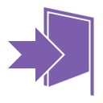
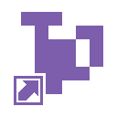

BACK
GAMEPLAY BY YUIOP123
ALL PLATFORMS
| WINDOWS | LINUX | MAC | |||
| DOWNLOAD | .DEB | .TAR.GZ | DOWNLOAD | ||
| TETR.IO Desktop is experimental software — it is provided "as is" and no warranty of any kind is attached. However, please report bugs and issues when you see them! Furthermore, these installers are not signed. You may get a warning like "SmartScreen protected your PC", or have to allow unsigned apps on Mac. This is temporary. |
FEATURES
 Better performance on most devices — performance patches pre-applied (see also the performance tips) Better performance on most devices — performance patches pre-applied (see also the performance tips) |
| Discord Rich Presence integration — show what you're playing |
| Skip the login screen and get in the game quicker |
| Place TETR.IO in the Start Menu and taskbar |
| No BS — no background processes or spyware, just TETR.IO in a nice client with some extra features |